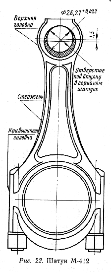
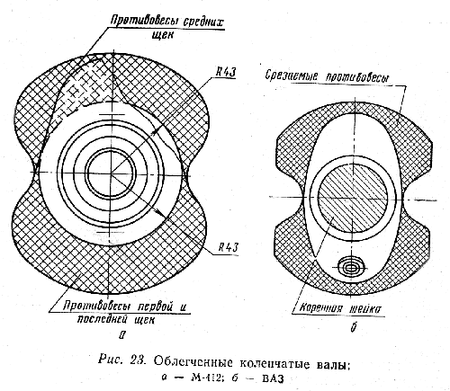
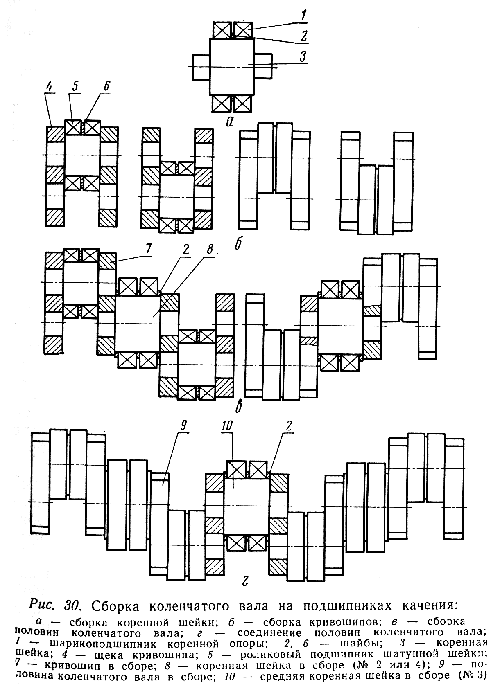
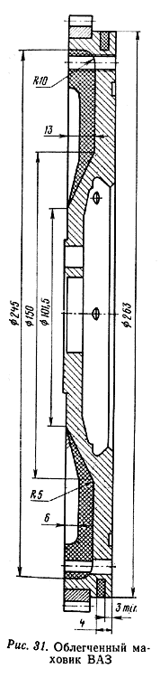
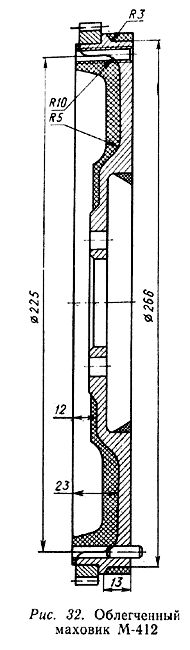

Шатун является частью кривошипно-шатунного механизма двигателя и служит для передачи усилий от поршня к коленчатому валу и, наоборот, от коленчатого вала к поршню в зависимости от направлений действующих сил.
Обтекаемости стержня шатуна придается серьезное значение. Для этого шатун надо обработать на грубом наждачном камне, чтобы уменьшить массу, а полировку выполнить на войлочном круге мелкой наждачной пастой. Окончательно обработанные шатуны не должны отличаться по массе друг от друга больше чем на 1-2 грамма. Облегченный и полированный шатун легче стандартного на 100-120 г.
При подготовке к сборке двигателя увеличенного рабочего объема стандартный шатун требует переделки. Поршень диаметром 92 мм рассчитан на палец диаметром 25 мм (вместо 22 мм в стандартном двигателе М-412). Кроме того, различно у этих поршней и расстояние от оси бобышек до верхней части днища. Поэтому расточка верхней головки шатуна производится несоосно прежнему отверстию (рис. 22). После расточки головки шатуна под размер 26,27+0,02 мм в отверстие запрессовывается готовая разрезная втулка под поршневой палец от двигателя ГАЗ-24 или втулка, самостоятельно изготовленная из рекомендованных материалов. Окончательная расточка или развертка отверстия под поршневой палец производится индивидуально при наличии уже облегченных пальцев диаметром 25 мм.

Не все стандартные шатуны годятся для описанной переделки. Подбор шатунов нужно производить по следующему признаку. Для надежной работы шатуна после расточки под втулкой должно оставаться "металла головки", не считая стержня, не менее 2,5-З мм. Учитывая смещение нижней части расточенного отверстия на 3 мм вниз, исходная толщина материала под втулкой поршневого пальца должна быть не менее 5,5- 6,0 мм. По этому размеру и следует подбирать шатуны, годные под расточку.
По последнему признаку шатуны лучше всего подбирать из одной или соседних весовых групп, чтобы облегчить дальнейшую подгонку по массе.
Цветовой индекс весовой ГРУППЫ наносится на крышке шатуна согласно табл. 26.
При сборке стандартного двигателя или его ремонте важно знать разбивку на группы отверстий головки шатуна. Цветовая маркировка наносится по головке шатуна (табл. 27).
Поршневой палец двигателя ВАЗ в отличие от всех ранее выпускавшихся двигателей в нашей стране имеет неподвижную посадку в шатуне; соответственно нет в шатуне и запрессованной втулки.
Такая конструкция практически не дает возможности произвести разборку узла поршень-палец-шатун,
Таблица 26
|
№ |
п/п |
Цвет маркировки |
Масса головки шатуна, г |
|
|
1 |
Одна белая полоса |
210+2 |
590 +2 |
800 +4 |
|
2 |
Две белые полосы |
215 +2 |
595 +2 |
810+4 |
|
3 |
Одна черная полоса |
220 +2 |
600 +2 |
820+4 |
|
4 |
Две черные полосы |
225 +2 |
605 +2 |
830 +4 |
|
5 |
Одна зеленая полоса |
230 +2 |
610+2 |
840 +4 |
|
6 |
Две зеленые полосы |
235 +2 |
615+2 |
850 +4 |
|
7 |
Одна красная полоса |
240 +2 |
620 +2 |
860 +4 |
Таблица 27
|
Цвет маркировки |
Диаметр отверстия, мм |
|
Розовый |
22,0045-22,0020 |
|
Коричневый |
22,0020-21,9995 |
|
Зеленый |
21,9995-21,9970 |
|
Голубой |
21,9970-21,9945 |
так как при распрессовке ломается поршень. Это следует иметь в виду, планируя ремонт или переборку двигателя. Сборка этого узла производится с предварительным нагревом шатуна до 240° С в термопечи и требует определенной сноровки, ибо шатун быстро охлаждается, а в охлажденном шатуне изменить положение пальца нельзя. Если нет печи, то можно порекомендовать нагрев верхней головки шатуна газовой горелкой до появления первых цветов побежалости, но не сильнее, так как нагретый докрасна шатун будет деформироваться при сборке.
Коленчатый вал является одной из наиболее ответственных и наиболее сложных в конструктивном и производственном отношении деталей двигателя. Недостаточная надежность коленчатого вала, как правило, служит причиной повышенных износов и сокращения срока службы двигателя. От прочности коленчатого вала во многом зависит возможность форсировки двигателя.
Исходя из условий работы двигателя к конструкции коленчатого вала предъявляют следующие требования: статическая и динамическая уравновешенность; прочность, жесткость и износостойкость шеек вала; отсутствие опасных резонансных колебаний; обтекаемость форм; высокая точность изготовления и обработки; возможно малая масса.
Двигатель М-412 имеет некоторое предрасположение к возникновению крутильных колебаний, может быть, из-за того, что передний конец коленчатого вала несколько перегружен. Здесь приводы масляного насоса, распределителя и распределительного вала, всей системы газораспределения, водяного насоса с вентилятором, генератора. Конструкторы предполагают, что именно с этим связан и относительно небольшой срок службы распределителя при предельных нагрузках на двигатель. Действительно, в условиях автомобильных соревнований распределитель приходится менять через каждые 8-10 тыс. км пробега, но это не является "криминалом", так как опыт эксплуатации стандартных и форсированных двигателей с обычными нагрузками позволяет утверждать, что в этих условиях срок службы распределителя соответствует пробегу в 100 тыс. км и более. Других последствий резонансных крутильных колебаний не обнаружено. В таком случае имеет смысл эксперимент со снятием противовесов с коленчатого вала для уменьшения его массы в целях увеличения мощностных показателей при переходных режимах (рис. 23). В настоящее время можно считать, что коленчатые валы с обрезанными противовесами, облегченные на 2,5 кг для ВАЗа и 6,0 кг для М-412, по сравнению со стандартными вполне работоспособны и дают эффект в улучшении динамики автомобиля. Срезать противовесы можно на обычном фрезерном станке с обязательной динамической балансировкой перед установкой коленчатого вала в двигатель. Перед обработкой коленчатого вала или перед его монтажом обязательно проводится обмер диаметров шатунных и коренных шеек микрометром.

Кстати, в литературе имеются сведения, что при подготовке спортивного автомобиля BMW-1800 на некоторых образцах двигателей устанавливаются коленчатые валы без противовесов.
Не вдаваясь в подробный анализ причин, можно рекомендовать использовать коленчатые валы с диаметром коренных шеек 61,94+0,01 мм и шатунных шеек 56,00-0,01 мм для двигателя М-412.
Вкладыши двигателя М-412 (шатунные и коренные)-тонкостенные, триметаллические. Основу вкладышей составляет стальная лента толщиной 1,4 мм, покрытая слоем свинцовистой бронзы 0,25 мм. Верхний антифрикционный слой представляет собой сплав свинца с индием; глубина последнего слоя 0,02-0,03 мм.
Такие тонкостенные вкладыши обладают хорошей гибкостью и при монтаже точно принимают форму постели. Монтаж вкладышей должен производиться с особой точностью, тщательностью, так как даже небольшие шероховатости постели или попадание под вкладыш твердых частиц искажают его форму, что не только ухудшает отвод тепла от шейки коленчатого вала, но и меняет величину зазора между шейкой и вкладышем, отчего заметно увеличивается их износ.
Вкладыши двигателя М-412 и ВАЗ не требуют индивидуальной подгонки по месту благодаря высокой точности изготовления. Ручная шабровка может только нарушить тонкий верхний антифрикционный слой. Заменять вкладыши в двигателе лучше со снятием коленчатого вала.
Характерной неисправностью двигателя М-412 по общему мнению считается выход из строя вкладышей независимо от их типа, литража двигателя, степени сжатия, вида соревнований и даже марки автомобиля. Поэтому возникла мысль перейти на конструкцию коленчатого вала не с подшипниками скольжения, а с подшипниками качения.
Коленчатый вал на подшипниках качения в собранном виде показан на рис. 24. Основным его достоинством является заметное уменьшение потерь на трение, благодаря чему можно снизить требования к качеству масла и системе смазки в целом, так как подшипникам качения хватает смазки способом разбрызгивания. Наша промышленность, особенно в производстве двухтактных двигателей для автомобилей и мотоциклов, освоила массовое изготовление валов на роликовых и шариковых подшипниках. Эти двигатели в спортивном варианте надежно работают при 9000-10000 об/мин, что весьма важно для гонщиков.
Некоторые западноевропейские фирмы изготавливают спортивные двигатели не только с коленчатыми валами на подшипниках качения, но и с комбинированной системой - на подшипниках качения и подшипниках скольжения.
Э.Г. Сингуринди вместе с конструкторами Кировского завода и автомобилистами Ленинградского оптико-механического объединения также была предпринята попытка изготовления в 1969-1970 гг. сборного коленчатого вала, где использовались коренные шариковые подшипники и роликовые шатунные. Основные размеры коленчатого вала оставались без изменения. Что касается выбора подшипников, то наружные размеры их были ограничены: для коренных- расстоянием между шпильками крепления коренных крышек блока цилиндров, для шатунных- размером кривошипной части шатуна (рис. 25-29).
Исходя из компоновочных соображений и соответствия подшипников расчетным нагрузкам на коренную шейку устанавливались два шариковых подшипника № 110 (первая мелкая серия), на шатунную- два роликовых подшипника № 292206.
Роль внутренней обоймы роликовых подшипников выполняет сама шатунная шейка,
поэтому твердость ее должна быть не менее HRC 60-65. Радиус кривошипа был
оставлен 35 мм.
Изготовление коленчатого вала- дело далеко не простое. С изготовлением заготовок
деталей вала особых трудностей не было.
Однако надо, сказать, что точные расчеты коленчатого вала на прочность вследствие сложности его фор-мы и невыявленности точного характера действия расчетных нагрузок, зависящего от жесткости вала и его опор, а также других причин, практически невозможны. Данные показывают, что напряжения в элементах коленчатого вала, полученные при его лабораторных испытаниях, могут отличаться от расчетных в 2-3 раза.
Весьма сложной оказалась и технология сборки. Был испорчен тройной комплект деталей, прежде чем удалось собрать один вал. Поэтому тем, кто возьмется за изготовление сборного коленчатого вала, необходимо учесть некоторые практические рекомендации.
Во-первых, нужно помнить, что такой вал является сборным, но не разборным, т. е. он собирается один раз и навсегда. Значит, во избежание неисправимых ошибок при запрессовке лучше иметь по 1-2 штуки подшипников, щек и шеек сверх комплекта.

Во-вторых, начиная сборку (рис. 30) с запрессовки шариковых подшипников на соответствующие шейки, не забудьте поставить распорную шайбу между каждой парой подшипников. Свободная посадка подшипника на шейку не годится. В этом случае надо заменить либо шейку, либо подшипник. Затем собираются 4 секции, каждая из двух щек и одной шатунной шейки с роликовыми подшипниками, свободно, но без зазоров садящихся на свои шейки. В связи с тем что посадочные концы шеек запрессовываются в отверстия щек, сборка должна производиться после предварительного нагрева щек и охлаждения шеек по возможности быстро. Собранные секции проверяются на правильность геометрии на специальной плите. Опорными поверхностями для этой и всех дальнейших проверок являются точно обработанные (не ниже 7 класса) грани щек.
Проверенные секции собираются попарно с помощью второй и четвертой коренных шеек по такой же технологии. Полученные теперь уже две секции опять обязательно проверяются на плите с применением шлифованных брусков одинаковых размеров.
Последний, самый ответственный момент сборки вала - соединение двух последних секций между собой средней коренной шейкой. Запрессовка переднего и заднего концов коленчатого вала уже труда не представит.
Если после сборки вала при окончательной проверке на плите его кривизна во всех плоскостях оказалась не более 0,02-0,03 мм, считайте, что вам повезло. Такой вал можно устанавливать в двигатель. Для установки собранного вала в двигатель посадочные места коренных подшипников блока цилиндров растачиваются под размер 80-0,02 мм, а нижнее отверстие шатуна - под размер 72-0,02 мм. Расточку блока цилиндров лучше производить за одну установку на станке, чтобы сохранилась строгая соосность постелей под коренные подшипники. При этом возникает необходимость в снятии части металла со шпилек крепления крышек коренных подшипников и болтов крепления крышки шатуна. К этому вынуждают наружные размеры подшипников. Однако в процессе эксплуатации собранного нами вала нареканий на крепление не было.
Правильно собранный и закрепленный в блоке цилиндров вал вращается с легкостью, близкой к легкости вращения велосипедного колеса. Точно собранный коленчатый вал практически в балансировке не нуждается. Например, при проверке нашего вала его дисбаланс оказался в пределах 3-5 г/см.
Уже отмечалось, что подшипникам качения в двигателе достаточно смазки разбрызгиванием, но дополнительно можно использовать смазку под давлением, подаваемую в отверстия коренных подшипников блока цилиндров. Для этого в масляных отверстиях нарезается резьба М10 и вворачиваются пробки типа жиклеров карбюратора с отверстием 0,7 мм.
Маховик в автомобильном двигателе служит для выравнивания скорости вращения коленчатого вала, вывода из мертвых точек кривошипно-шатунного механизма и осуществления вспомогательных тактов рабочего процесса. Кроме этого, маховик выполняет несколько конструктивных функций. На его обод напрессован венчик для прокрутки двигателя стартером, а на торцевую шлифованную поверхность опирается фрикционный диск сцепления.
С точки зрения подготовки стандартного двигателя к соревнованиям нас больше интересует первая и главная часть функций маховика, так как их выполнение позволяет получить необходимую равномерность хода двигателя.
Нет ли здесь резерва полезной мощности для спортивного двигателя?
Есть. Нужно уменьшить массу маховика. Причем каждый грамм, "снятый" на максимальном удалении от центра маховика, полезнее нескольких-граммов, "снятых" ближе к центру и имеющих поэтому незначительный радиус вращения. Ведь нам важно не просто уменьшение массы маховика, а уменьшение величины его момента инерции.
Однако вопрос облегчения маховика не так прост. Теоретические и экспериментальные исследования показывают, что с увеличением равномерности крутящего момента (равномерности хода двигателя), достигаемой за счет достаточной величины махового момента (кинетической энергии, накапливаемой маховиком), заметно улучшаются условия работы двигателя и механизмов трансмиссии. Автомобиль лучше трогается с места, износ его деталей вследствие ослабления ударности нагрузки и колебаний, сопутствующих неравномерному ходу двигателя, уменьшается, работа двигателя делается более спокойной.
Нами был произведен, ориентировочный расчет размеров маховика М-412 и ВАЗ, необходимых: для равномерной работы двигателя при наименьших устойчивых оборотах (холостой ход), для обеспечения нормального пуска двигателя и трогания автомобиля с места при наименьших оборотах и мгновенном включении сцепления.
Размеры расчетного маховика оказались меньше, причем настолько, что на такой маховик невозможно было бы поставить сцепление. Значит, маховик можно было значительно облегчить, оставив его прежние размеры. Наш новый маховик весил всего 4 кг, вместо 8кг, сохранив свою прочность (рис. 31, 32).

Предлагаемый вариант облегченного маховика испытан в большом числе различных соревнований и на разных двигателях, так что можно рекомендовать его широкое применение. Единственным и безусловным условием является динамическая балансировка облегченного маховика, произведенная отдельно от коленчатого вала.
Не следует забывать, что в двигателе М-412 маховик крепится на фланец коленчатого вала в любом положении, а в двигателе ВАЗ при установке маховика на коленчатый вал необходимо, чтобы метка (конусообразная лунка) около зубчатого обода маховика и ось шатунной шейки первого цилиндра находились в одной плоскости и по одну сторону от оси коленчатого вала.